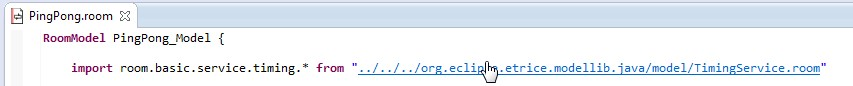

In eTrice the primary source of the models is text based. However, for convenience the structure and the behavior of structure classes can be edited with graphical editors using the standard ROOM notation. Further. the textual models can be structured hierarchically using the import statement.
So jumping between textual models and switching to and between diagrams and back to the textual representation is a frequent task. Therefore in this chapter we want to show the various possibilities to navigate the models.
There are three global key bindings (cf. the eTrice main menu item):
Jumping from a diagram to the textual model using Alt+M will open (or bring to the front) an editor with the ROOM file and will select the structure class of the diagram in the text.
The other way round, the position of the cursor or selection in the ROOM file is relevant. If it is enclosed by an actor class then for Alt+B a state machine editor is opened. If it is a structure class and Alt+S is pressed then the structure editor is opened for this class.
As an alternative the context menu of an actor class can be used to open the associated structure or behavior diagram.
Switching from the behavior to the structure is performed on Alt+S and vice versa on Alt+B.
Model file paths in import statements are hyper links that can be clicked with the Ctrl key pressed.

An alternative is to use F3 (open declaration) with the cursor inside the file name.
In a similar way references to model elements can be navigated using F3 or Ctrl-Click, e.g. the protocol class of a port or the actor class of an actor reference or the data class of an attribute and many more.
The "quick outline" is a means that allows fast navigation in a single model. Ctrl-O opens a window similar to the outline view. Typing text (with possible wild cards * and ?) filters the view and selecting an element and pressing return locates the element in the editor.
Ctrl-Shift-G searches references to model elements. E.g. "Find references" for a selected actor class lists all locations in ROOM models and diagrams that refer to this actor class.
Using the outline, also imported elements can be browsed and navigated.
The behavior editor displays a hierarchical state machine. States can have a sub state graph and thus the hierarchy of states and state graphs forms a tree like structure. The eTrice behavior editor always shows only one level of the hierarchy. The editor switches to the sub state graph of a state by double clicking it. The path of the currently displayed state graph is indicated in the upper right corner using state names separated by slashes (/). A single slash indicates the top level. Double click into the empty space of a state graph will switch to the state graph one level up.
A double click on a transition (or its label), a transition point or a choice point opens their property dialog. A double click on a state opens its property dialog if it has no sub state graph or it switches to its sub state graph.
The context menu of a structure diagram (invoked in the empty space inside the bounding rectangle) contains an entry "Open Class Behavior" which opens the behavior diagram (same as Alt+B).
The context menu of an actor reference contains entries: "Open Ref Structure" and "Open Ref Behavior" that allow to open the associated diagrams of the referenced actor class.